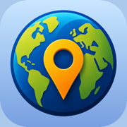
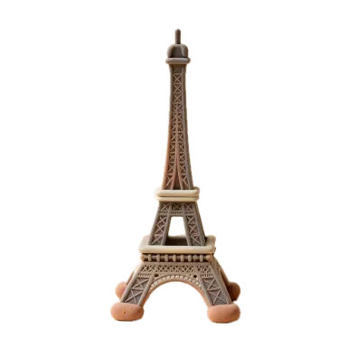
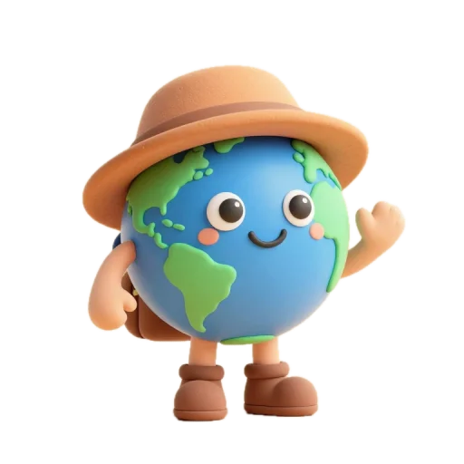
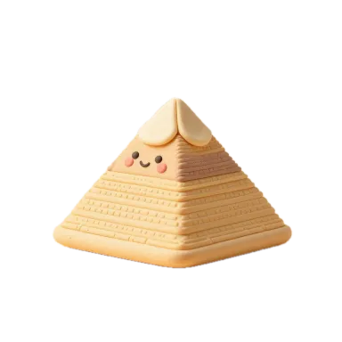
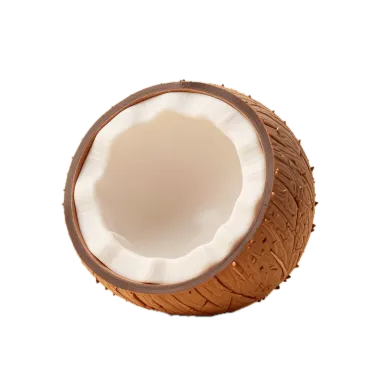
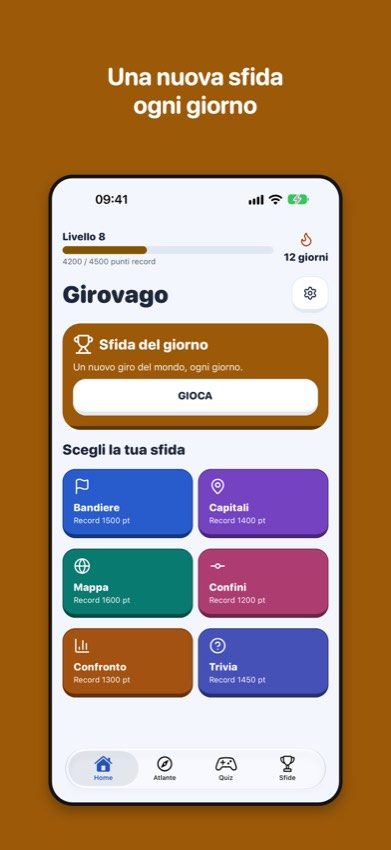

Banderas
Un país, cuatro respuestas. ¿Lo reconoces por su bandera?

GirovagoTU PRÓXIMO VIAJE ES UN QUIZ
Adivina banderas y capitales, explora el mapa y colecciona 250 souvenirs. Viaja con Giro: tu próximo recuerdo está a una respuesta.
Para iPhone · En seis idiomas



Un pequeño quiz. Un gran viaje.
01 / Cómo jugar
Una bandera que reconocer, una capital que recordar, una entrega que completar. Elige tu próxima parada.
Un país, cuatro respuestas. ¿Lo reconoces por su bandera?
De Roma a Tokio: encuentra la capital correcta y amplía tus horizontes.
¿Qué país es más grande? ¿Cuál tiene más habitantes? Compáralos.
Observa un objeto, sigue las pistas y adivina de dónde viene.
Entrena la memoria y encuentra las parejas, descubrimiento a descubrimiento.
Cruza fronteras en el mapa y lleva el souvenir a su destino.
02 / 250 SOUVENIRS
250 souvenirs para coleccionar: monumentos, animales y objetos que cuentan la historia de un lugar. ¿Cuál descubrirás después?






Supera el desafío diario, mantén tu racha y vuelve por las recompensas del día. Abre maletas y descubre qué souvenirs te esperan.
03 / GIROVAGO
Preguntas, desafíos y descubrimientos, siempre a mano.



Capturas de la app en italiano. El juego está disponible en seis idiomas.
Para informar de un problema, indica el modelo de iPhone, la versión de iOS y qué estabas haciendo. Los informes de GitHub son públicos; usa el correo para solicitudes con datos personales.